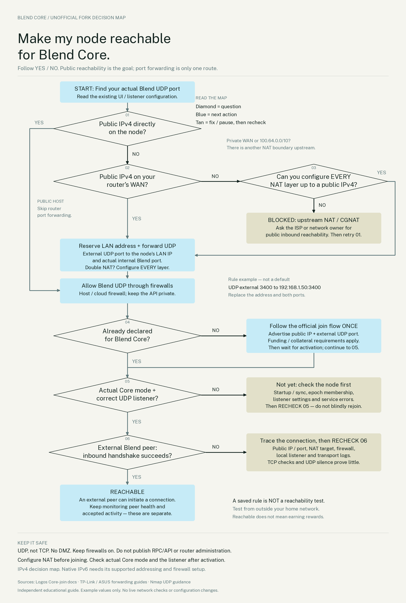

All guides · Blend · Reachability
Reachability for Blend Core.
Understand the route from an Internet peer to your node, then configure and verify it. A home IPv4/NAT walkthrough with English narration, timed subtitles and example router settings.
5:02 · 1080p · narrated with subtitles · 14 chapters. Choose a chapter, then press Play. No autoplay.Start with the decision map.
Follow the Yes/No path for your network. Port forwarding is one route to reachability—not a requirement for every setup.
Open full-size map · Download PDF · Download PNG
{kind=link}
{kind=link}

Router setup checklist
Replace every example value. 203.0.113.20 is a documentation-only address, not a usable endpoint. 192.168.1.50 is an example LAN device. 3400 is an example port, not a universal Blend default.
- Find the actual Blend port. Read the existing UI setting or
blend.core.backend.listening_address. Do not post full configuration files or regenerate keys. A local bind address such as0.0.0.0is not your advertised public IP. - Check the router’s Internet/WAN IPv4. Compare it to your public IPv4. WAN addresses in
10.0.0.0/8,172.16.0.0/12,192.168.0.0/16, or shared100.64.0.0/10indicate upstream NAT. A mismatch is a clue requiring investigation, not proof by itself. Ask the ISP about publicly reachable IPv4; a dynamic public address can work but changes must be handled. - Check double NAT. If you control both routers, the outer mapping targets the inner router’s WAN address; the inner mapping targets the node’s LAN address. Example: outer router →
192.168.0.2:3400/UDP, then inner router →192.168.1.50:3400/UDP. A supported bridge setup is an alternative; check ISP requirements before changing it because it can interrupt Internet service. Provider-controlled CGNAT requires provider cooperation. - Reserve the node’s LAN address. Find its active Ethernet or Wi-Fi adapter in the router’s device list and add a DHCP reservation in your router’s own LAN subnet. Confirm the node currently uses that address. A switch of adapters can change the device to which the reservation applies.
- Open the official router app or local administration page. Find Port Forwarding, NAT Forwarding or Virtual Server. Use your own admin credentials privately. Do not reset the router just to follow this example.
- Add and save one UDP rule. Fill the values below using your real device and port. Check that the destination is not an old node computer. One public-IP/UDP-port mapping cannot simultaneously target two different nodes.
- Allow the actual internal Blend UDP port through the host firewall. Keep the firewall enabled. Do not use DMZ, forward broad ranges, or expose the local RPC/API, commonly
127.0.0.1:8080. Other Logos services have their own documented port requirements; this guide is specifically about Blend. - Follow the official Core join flow. Configure the mapping and firewall first. A new declaration advertises the public IP and external UDP port. Joining locks collateral and requires the official funding/identity steps. Existing declarations need the supported update or recovery procedure—not an unreviewed duplicate join.
- Verify after Core activation. Check actual Core mode and the configured listener; on Linux,
ss -lunlists UDP sockets. An Edge/Broadcast node may not have an active Core listener yet. A local listener proves neither Internet reachability nor a successful handshake. - Test from outside your LAN. Ask a compatible external Blend peer to initiate a connection to the advertised endpoint. Check incoming transport/handshake evidence and peer health at both ends. A TCP checker cannot test UDP, and UDP silence or
open|filteredis inconclusive. A test from your own Wi-Fi can be misleading because of NAT loopback. - Maintain the mapping. Recheck after router, network adapter, computer or public-IP changes. Updating the router does not automatically update an on-chain locator. Reachability is necessary for this setup, but does not prove membership, accepted activity or rewards.
| Router field | Example | What to use |
|---|---|---|
| Name / description | Blend Core | A recognisable label |
| Protocol | UDP | UDP for the QUIC listener—not TCP |
| External / service port | 3400 | The public port peers will use |
| Internal IP / device | 192.168.1.50 | Your node’s reserved LAN address |
| Internal / local port | 3400 | Your configured Blend listener port |
| Enabled | Yes | Enable, apply and verify |
The external and internal ports may differ. The advertised locator must use the external port; the forwarding target must use the actual internal listener.
Find the settings on your router
These are documented menu examples, not a claim about your router model or firmware. The video uses a generic interface.
- TP-Link: depending on model, Forwarding → Virtual Servers, or Advanced → NAT Forwarding → Virtual Servers / Port Forwarding → Add. Official instructions.
- TP-Link ISP-customised routers: one documented DHCP-reservation location is Advanced → Network → LAN Settings → Address Reservation. This is not the menu for every TP-Link model. Official ISP-router guide.
- ASUS: WAN → Virtual Server / Port Forwarding → Enable Port Forwarding → Add profile. Use a custom UDP rule, not the HTTP/FTP examples in the manual. Official instructions.
For a model-specific walkthrough, provide only the router make/model, firmware version and whether there is a separate ISP modem/router. Do not share passwords or unredacted configuration exports.
Full transcript
- 0:00 — Online is not the same as reachable.
Your node is online. Why can other Blend nodes still struggle to reach it? At home, your router can allow outgoing connections and their replies, while blocking new connections arriving from the Internet. - 0:15 — One public address. Private devices.
Your home devices have private local addresses. The router usually shares one public IPv4 address between them using network address translation, or NAT. It tracks outgoing flows so replies return to the right device. - 0:32 — Give incoming traffic a destination.
Port forwarding adds an explicit rule for incoming traffic. In this example, traffic arriving at public UDP port thirty four hundred is sent to the node's local address and port. These addresses and this port are examples. Use your own values. - 0:52 — Blend Core must be reachable.
Blend Core nodes relay and blend messages for other peers. Their advertised endpoint must be reachable using QUIC over UDP. Behind a home IPv4 NAT, port forwarding is the usual solution. A server with a public address does not need this home-router mapping. - 1:13 — First, find your actual Blend port.
Read the existing Blend port in the node interface or the Blend listening address in its configuration. Our example uses thirty four hundred, but it is not a universal default. Do not confuse this with the blockchain gossip port or the local API. Keep your existing keys and configuration. - 1:34 — Can your router receive public traffic?
Compare the router's WAN IPv4 address with the public IPv4 seen online. A private WAN address, a shared address starting between one hundred dot sixty four and one hundred dot one hundred twenty seven, or an address mismatch suggests upstream NAT. Ask your Internet provider for a publicly reachable IPv4 service if needed. - 1:58 — Two routers means two boundaries.
An Internet-provider router plus your own router can create double NAT. Forward through both devices, or use a supported bridge configuration. If the upstream NAT belongs to your provider, you cannot fix it with a rule on your home router alone. Do not use DMZ as a shortcut. - 2:19 — Keep the node at the same LAN address.
In the router's connected-device list, identify the computer running your node. Add a DHCP address reservation for its network adapter. This keeps the forwarding destination stable. Check that the reservation and the node's actual address agree, especially after changing from Wi-Fi to Ethernet. - 2:41 — Find the forwarding settings.
Use your router's official app or local administration page. Look for Port Forwarding, NAT Forwarding, or Virtual Server. Log in privately. The screen here is a generic example, not your router's exact interface. Use the linked manufacturer guide for your model. - 3:02 — Create one UDP rule.
Name the rule Blend Core. Choose UDP. Enter the external port, the node's reserved local address, and its actual internal listening port. Enable and save. Our example uses the same port on both sides. If they differ, peers must use the external port. Check you have not targeted an old computer. - 3:28 — Open the service. Not the whole machine.
The node's own firewall must also allow the configured Blend UDP port. Keep the firewall enabled, avoid broad port ranges, and do not expose the local API or router administration. A forwarding rule does not start the node, and it does not make every service on the computer safe to publish. - 3:49 — Advertise the outside endpoint.
For a new Core declaration, use your public IPv4 address and external UDP port in the advertised locator. Follow the official funding and join instructions. Joining locks collateral; it is not just a network test. If you already have a declaration, do not blindly withdraw or declare again. - 4:12 — Verify after Core activation.
Configure forwarding and firewall access before joining. After activation, verify actual Core mode and the local UDP listener. Then have a compatible Blend peer on another Internet connection initiate a connection to your public endpoint. Check the handshake and peer health. Testing only from your own Wi-Fi is not enough. - 4:36 — Check each layer. Keep it working.
A TCP port checker cannot verify UDP, and a silent UDP probe is inconclusive. Check the public address, mapping, host firewall, listener, and peer handshake separately. Recheck after address or hardware changes. Reachability enables participation; it does not prove current Core membership, accepted activity, or rewards.
Sources, scope & production
- Logos: Join the Blend network as a core node — configured UDP port, public mapped locator, setup before joining and checks after activation.
- Logos: Run a node — private local API and service-specific ports.
- The official TP-Link and ASUS support guides linked above — forwarding fields, address reservations, public WAN prerequisites and double NAT.
- Nmap: UDP scan interpretation — why no response and
open|filtereddo not prove a closed or reachable port. - RFC 5737 — documentation-only public IPv4 examples.
- Independent guide for an unofficial fork. No Logos logos or marks are used. Existing colours and Public Sans typography are retained; upstream links are technical references, not endorsements.
Scope: home IPv4 with NAT. A public-address host does not require this home-router mapping; native IPv6 needs its own supported addressing and firewall setup. All diagrams and rule screens are illustrative. No user router, node, declaration or firewall was modified or tested.
English synthetic narration, with scene lengths and subtitle timing derived from the generated audio. Full transcript is the non-motion alternative. No autoplay. Independent educational guide, not an official Logos publication.